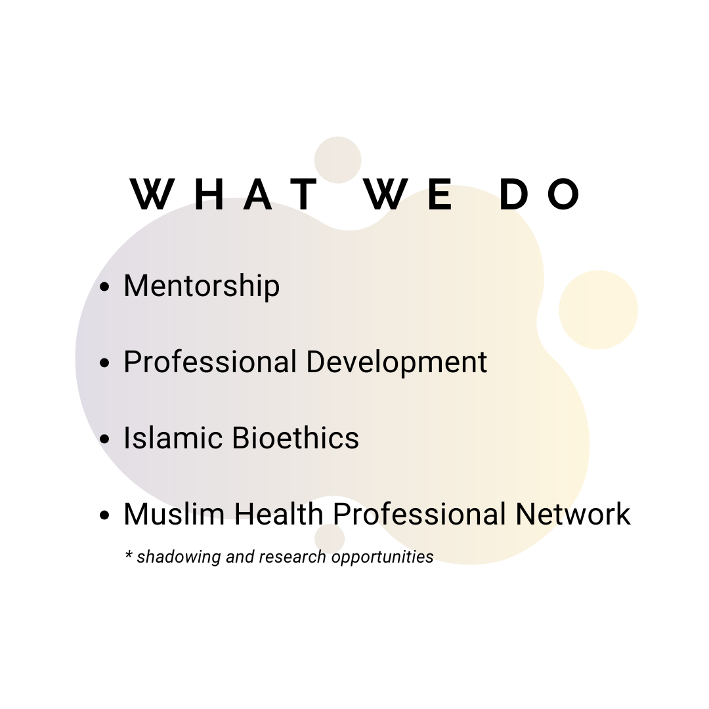
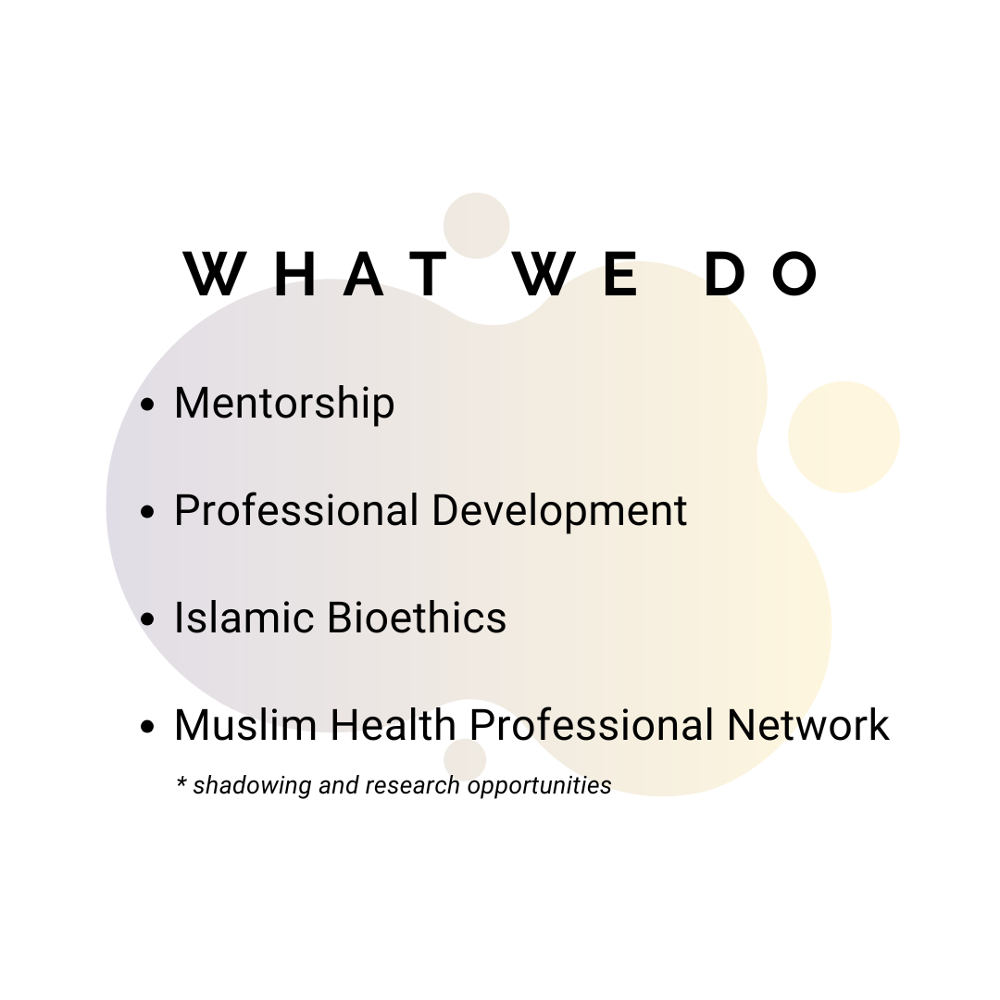
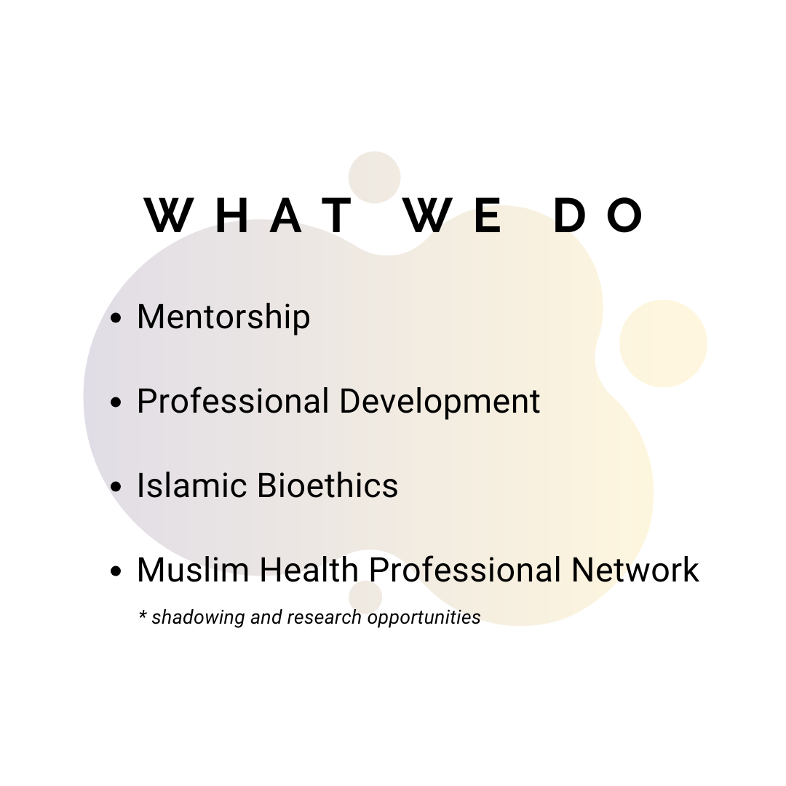

Elisa Win
I’m a dedicated fourth-year biochemistry major on the pre-Physician Assistant (PA) track at the University of California, Riverside (UCR). My academic journey has been both challenging and rewarding, fueling my passion for healthcare and helping others. I’m deeply committed to gaining the knowledge and skills necessary to excel in the medical field, and I’m excited to translate my studies into meaningful patient care.
I cuurently serve as an optometric technician, where I gain hands-on experience in patient care. This role has provided me with a unique perspective on the healthcare system, allowing me to work closely with patients and learn about the intricacies of vision care. Assisting in the examination process and interacting with patients has deepened my understanding of the importance of compassion and clear communication in a clinical setting. These experiences have further solidified my aspiration to become a PA, where I can blend my love for science with direct patient interaction.
I am also proud to serve as the president of the Shifa Society of Muslim Pre-Health Students at UCR. In this role, I have the privilege of leading a vibrant community of like-minded individuals who share a commitment to health and wellness. We focus on providing resources, mentorship, and networking opportunities for Muslim students pursuing careers in healthcare. Organizing events and workshops has not only allowed me to develop leadership skills but has also deepened my understanding of the unique challenges faced by minority students in the health profession. I believe that fostering an inclusive environment is essential for the growth and success of all students.
Experience
Optometric Technician
• Assisted in patient intake and conducted preliminary vision tests, ensuring accurate data collection for optometrists and enhancing overall patient experience.
• Operated and maintained diagnostic equipment, including tonometers and autorefractors, while adhering to strict safety and sanitation protocols.
• Educated patients on proper eyewear care and usage, providing support in selecting appropriate lenses and frames based on individual needs and preferences.
Tutor
• Provided individualized tutoring sessions in subjects such as math, science, and English, resulting in a 20% improvement in students' academic performance and confidence.
• Developed customized lesson plans and engaging learning materials to cater to diverse learning styles, fostering a positive and effective educational environment.
• Collaborated with parents and teachers to track student progress, identify areas for improvement, and implement strategies to enhance understanding and retention of key concepts.
President of The Shifa Society of Muslim Pre-Health Students
• Led a team of over 50 members in organizing events and workshops focused on professional development, community service, and health education, enhancing engagement and collaboration within the pre-health community.
• Fostered partnerships with local healthcare organizations and guest speakers, facilitating networking opportunities and mentorship for members to explore various health professions.
• Developed and implemented strategic initiatives to increase membership and participation, resulting in a 30% growth in active members over the academic year.
Education
UC Riverside
Portfolio


 

